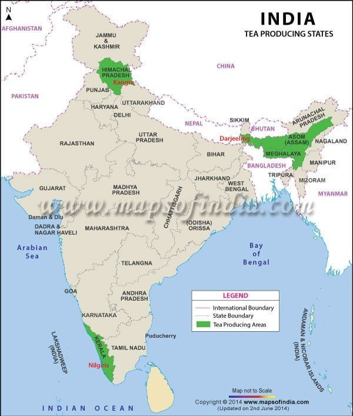

Tea is an evergreen plant that mainly grows in tropical and subtropical climates. Tea is a labour intensive crop and 50% of the labourers are women. It grows faster under light shade. Commercial cultivation of tea started in India from British era. India is the 2nd largest producer and the largest consumer of tea in the world. Tea plants require high rainfall but its roots cannot tolerate water logging. Hence, it requires sloppy areas.
emperature: 20-30 °C Rainfall: 150-300 cm Soil type: Loamy soil which is acidic in nature and rich in organic matter. Major Producers: Assam, Darjeeling (West Bengal), Meghalaya, Kerala, Himachal Pradesh, Tamil Nadu, Karnataka Highest Producer: Assam Research Centres: Tocklai, Assam Highest Producing Country: China